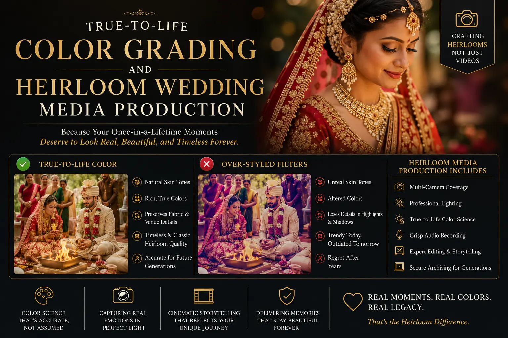
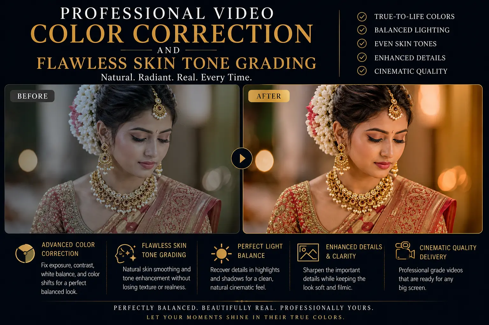

Why Data-Accurate Color Science Beats Trendy Internet Video Filters for Heirloom Visuals
The Danger of Chasing Visual Trends for Permanent Memories
In the digital age, visual trends move at a rapid pace. Social media platforms are filled with trendy color filters — such as desaturated greens, moody sepia tints, or high-contrast teal-and-orange grades. While these filters can look stylish in a temporary post, they present a significant risk when applied to permanent wedding memories. A filter that feels fashionable today will likely look dated in ten, twenty, or fifty years, turning your wedding film into an artifact of a specific internet era.
To create lasting visuals, professional creators rely on **True-to-Life Color Grading**. Instead of overlaying a destructive tint, this method focuses on correcting color balance and exposure, preserving the actual tones of the scene. This data-accurate approach lies at the heart of **Heirloom Wedding Media Production**, ensuring your wedding assets look natural and timeless for generations.
Achieving clean color accuracy requires a deep understanding of color space, lighting, and camera calibration. The **Best wedding photographers near me** avoid trendy presets, opting instead for professional color workflows that protect the integrity of every shot, ensuring the colors match the physical details of the day.
The Core Principles of Data-Accurate Color Workflows
Building a timeless color grade involves a multi-step **professional video color correction** process designed to neutralize lighting casts and preserve skin tones:
- Color Correction Before Grading. The editor must first normalize the footage, balancing whites, shadows, and midtones to match the real-world scene.
- Skin Tone Isolation. The skin tone line is a crucial guide in vector scopes. By isolating skin colors, the editor ensures skin looks warm and healthy, applying **flawless skin tone grading** without affecting the background color.
- High-CRI Calibration. Custom profiles map the camera sensor's color response under high-CRI lights, preventing color shifts in rich fabrics and jewelry.
- Preserving Fabric Hues. Calibrated workflows ensure traditional wedding apparel, like silk sarees or customized suits, maintain their exact physical colors.
Timeless Preservation
By using **True-to-Life Color Grading**, we ensure that your images and videos look natural and clean, protecting them from looking dated as visual trends shift.
Flawless Skin Tones
Using **Cinematic lookup tables for skin tones** ensures that all skin tones are rendered beautifully and accurately under any venue lighting condition.
Premium Film Standards
Our **luxury marriage film production** workflow utilizes raw capture and manual grading to deliver cinema-quality visuals without using cheap, destructive filters.
Cohesive Print and Digital
A calibrated pipeline ensures that colors match perfectly between the digital screen and physical prints in your **candid wedding albums near me**.

Why Skin Tones are the Ultimate Test of Color Quality
Human skin tones are highly complex and reflect light in subtle ways. Applying a generic filter to a group of people often creates unnatural color shifts, turning healthy skin gray, orange, or green. Professional colorists prioritize skin tone protection through targeted workflows:
- Skin Vector Alignment. Using color scopes, the editor adjusts the skin tones to align precisely with the natural skin vector line.
- Targeted Masking. The editor isolates the faces of the subjects, correcting shadows and highlights locally without altering the overall scene's exposure.
- High-Dynamic Range Capture. Capturing raw files provides the latitude needed to recover skin details in harsh sunlight or deep shadow.
Production Hardware
- 10-bit raw camera sensors for maximum color depth.
- High-CRI LED panels to illuminate skin naturally.
- Hardware-calibrated editing monitors.
- Color calibration targets used on-set.
Color Grading Steps
- Linearizing log footage to Rec.709 color space.
- Adjusting primary balance (red, green, blue offsets).
- Isolating skin tones via secondary qualification masks.
- Refining fabric colors to match physical reference swatches.
Key Deliverables
- Color-matched cinematic highlight films.
- Calibrated digital photo archives.
- Fine-art prints with matched ICC paper profiles.
- Archival raw media backups.

Conclusion
Trendy filters may offer quick appeal on social media, but they run the risk of dating your most precious memories. For permanent wedding visual archives, choosing **True-to-Life Color Grading** and **Heirloom Wedding Media Production** is essential. Through precise **professional video color correction** and **flawless skin tone grading**, you ensure that your wedding visuals retain their natural beauty and emotional impact for decades to come.
At **The PhD Ads**, we avoid trendy shortcuts. Our **top wedding videographer** and photography crews use calibrated workflows, sensor profiling, and advanced color grading tools to deliver timeless archives. Look for the **Best wedding photographers near me** or browse our styled **candid wedding albums near me** to see the difference that true color science brings to **luxury marriage film production**.
Key Topics
Invest in Timeless Colors
At The PhD Ads, we use data-accurate color science, custom sensor profiles, and professional grading tools to deliver timeless, true-to-life wedding memories.
Email: team@e2o.in